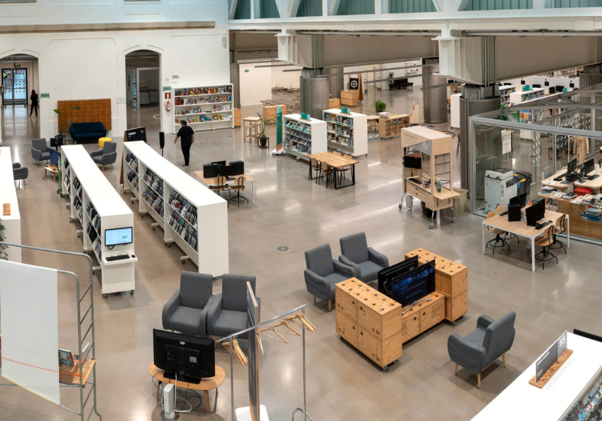

STORY VIBE
Rutas
Udal Liburutegi Nagusia
| Ciudad | Horas | Dificultad |
| Donostia | 10:00-20:30 | ⭐⭐⭐⭐⭐ |
INICIO
Carlos Blanco Aguinaga
| Ciudad | Horas | Dificultad |
| 6Km | 300mt | ‚≠ê‚≠ê‚≠êüî¥üî¥ |
INICIO
Tabakalera


| Ciudad | Horas | Dificultad |
| 6Km | 300mt | ‚≠ê‚≠ê‚≠êüî¥üî¥ |
INICIO